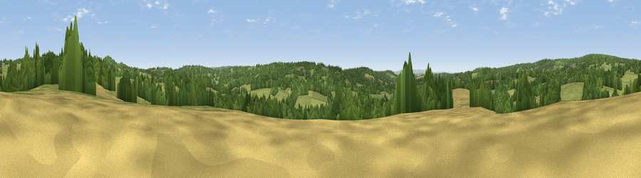

Viewpoint near Hadlow Down
#39279 in England · top 56% of its area beats it · near Hadlow Down · path 256 mWhere it is
The exact computed spot (TQ 52675 26575). Click the marker for map links.
Public access: the nearest public right of way is about 256 m away — the final stretch may cross private land. Computed from Natural England's CRoW access layer and OpenStreetMap rights of way — not the legal definitive map. Always verify locally.
The view, rendered

A 360° render of this exact spot computed from the terrain model, tree cover and land cover — summer colours, afternoon light, calibrated against photographs of famous viewpoints. Real trees, hedges and buildings will differ in detail.
The panorama
Grey silhouette: terrain skyline in each direction (720 bearings, Earth curvature and refraction included). Dashed green: skyline with trees (+15 m) and buildings (+8 m) as obstacles. Blue strip: how far the ground is visible on each bearing.
Where the view opens
Wedge length = distance to the farthest visible ground on that bearing (vegetation-aware). Rings at 10, 25 and 50 km.
What fills the view
58% grassland · 36% woodland · 5% cropland ·
Angular shares of the visible panorama (visual magnitude), not map area. Landscape diversity 0.38 (0–1 Shannon).
Key numbers
More beautiful places nearby
The staircase of upgrades: each row has a higher view potential than everything closer. Driving times are estimates from straight-line distance, calibrated against real road routing — check an actual route before setting out.
| Place | Direction | Drive | Score |
|---|---|---|---|
| Viewpoint near Rotherfield | NNE · 2 km | ~5 min | 42.2 |
| Viewpoint near Rotherfield | NE · 4 km | ~9 min | 44.5 |
| Viewpoint near Argos Hill | ENE · 4 km | ~10 min | 53.0 |
| Viewpoint near Fairwarp | WNW · 6 km | ~13 min | 53.9 |
| Viewpoint near Upper Hartfield | NW · 8 km | ~16 min | 59.6 |
| Brightling Obelisk [Brightling Down] | ESE · 15 km | ~27 min | 69.1 |
| Viewpoint near Glynde | SSW · 18 km | ~31 min | 70.8 |
| Malling Hill | SW · 18 km | ~32 min | 73.8 |
51.01829, 0.17533 · source: screening · position refined by local search. Computed location — check access rights before visiting.